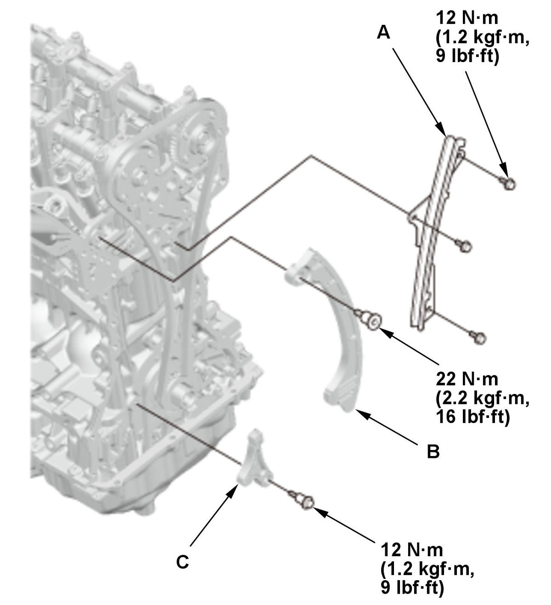
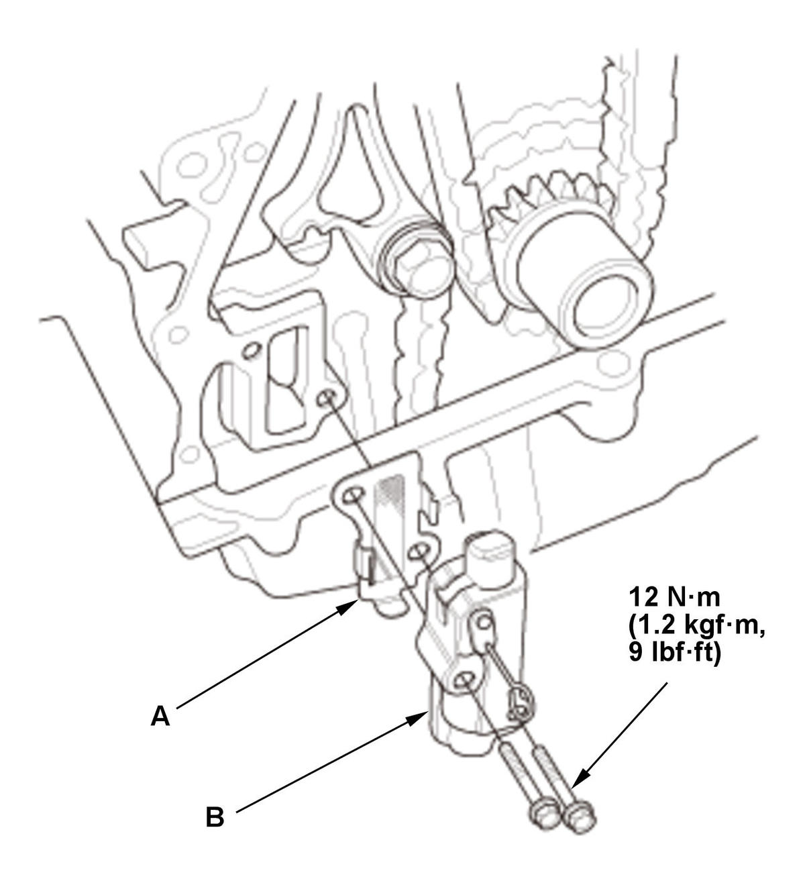
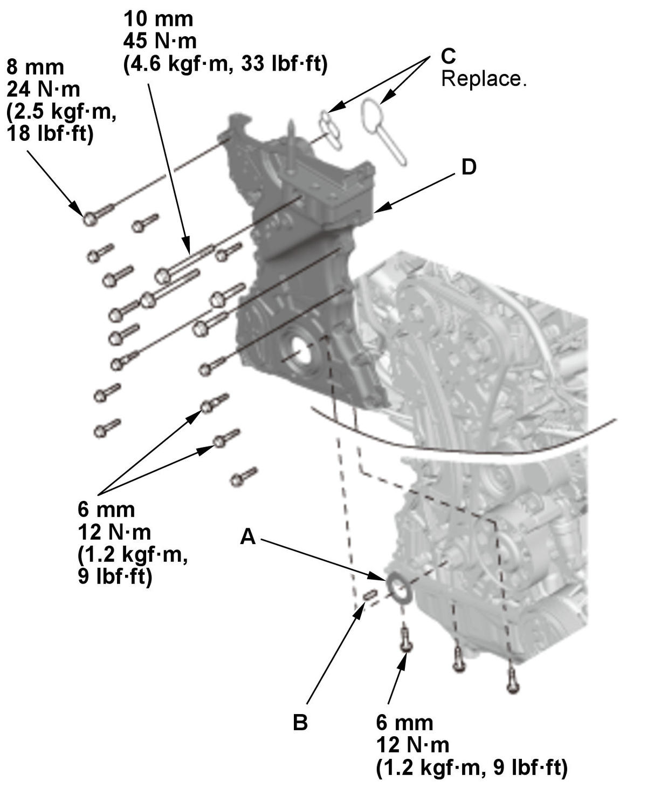
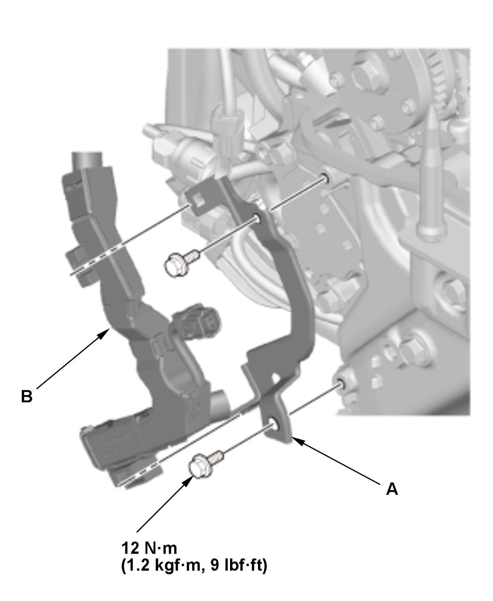

Cam Chain Removal and Installation (K20C2): Installation
NOTE: Keep the cam chain away from magnetic fields.
- No. 1 Piston at Top Dead Center - Set (Crank Side)
1. Set the crankshaft to top dead center (TDC). Align the TDC mark (A) on the crankshaft sprocket with the pointer (B) on the engine block. - No. 1 Piston at Top Dead Center - Set (Cam Side)
1. Set the No. 1 piston at top dead center (TDC). The "UP" mark (A) on VTC actuator B should be at the top. Align the TDC marks (B) on VTC actuator A and VTC actuator B. The TDC marks (C) on VTC actuator B should line up with the top edge of the head (D). - Camshaft Lock Pin Set - Insert
1. Insert the camshaft lock pin set to camshaft maintenance hole. - Cam Chain - Install
1. Install the cam chain on the crankshaft sprocket with the colored link plate (A) aligned with the mark (B) on the crankshaft sprocket. 2. Install the cam chain on VTC actuator A and VTC actuator B with the punch marks (A) aligned with the center of the colored link plates (B). - Cam Chain Tensioner Arm, Cam Chain Tensioner Sub Arm and Cam Chain Guide A - InstallFig 1: Exploded View Of Cam Chain Tensioner Arm, Cam Chain Tensioner Sub Arm And Cam Chain Guide A Components With Torque Specifications (K20C2)

Courtesy of HONDA, U.S.A., INC.1. Install cam chain guide A, the cam chain tensioner arm (B), and the cam chain tensioner sub arm (C). - Cam Chain Guide B - Install
- Camshaft Lock Pin Set - Remove
1. Remove the camshaft lock pin set from camshaft maintenance hole. - Cam Chain Auto-Tensioner - Install
1. Compress the cam chain auto-tensioner when replacing the cam chain. Remove the pin (A) from the cam chain auto-tensioner that was installed during removal. Turn the plate (B) counterclockwise, to release the lock, then press the rod (C), and set the first cam (D) to the first edge of the rack (E). Insert the 1.2 mm (3/64 in) diameter pin back into the holes (F).
NOTE: If the cam chain auto-tensioner is not set up as described, the tensioner will be damaged.
Courtesy of HONDA, U.S.A., INC.2. Install the cam chain auto-tensioner filter (A) to the cam chain auto-tensioner (B). 3. Install the cam chain auto-tensioner.
4. Remove the pin (A) from the cam chain auto-tensioner. - Cam Chain Case - Install

Courtesy of HONDA, U.S.A., INC.1. Check the pulley end crankshaft oil seal for damage. If the oil seal is damaged, replace the pulley end crankshaft oil seal. . 2. Apply liquid gasket to the cylinder head, the engine block and the oil pan mating surface of the cam chain case and to the inside edge of the threaded bolt holes.
3. Install the spacer (A) and the key (B), then install the new O-rings (C) on the chain case. Set the edge of the cam chain case (D) to the edge of the oil pan (E), then install the cam chain case on the engine block (F). Wipe off the excess liquid gasket on the oil pan and the cam chain case mating area.
NOTE: When installing the cam chain case, do not slide the bottom surface onto the oil pan mounting surface.
- Harness Holder and Harness Bracket - Install

Courtesy of HONDA, U.S.A., INC.1. Install the harness bracket (A) and the harness holder (B). - VTC Oil Control Solenoid Valve A - Install
- Rocker Arm Oil Control Valve - Install
- Side Engine Mount - Install
- Cylinder Head Cover - Install
- Crankshaft Pulley - Install
- Drive Belt - Install
- Engine Undercover - Install
- Right Front Wheel - Install
- Ignition Timing - Inspect